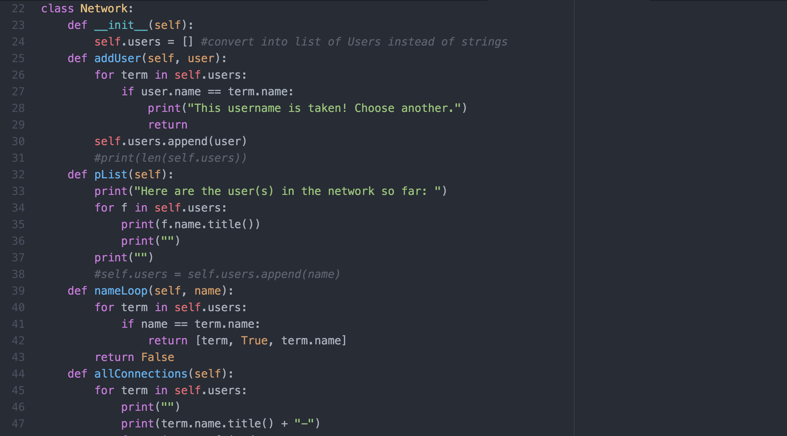
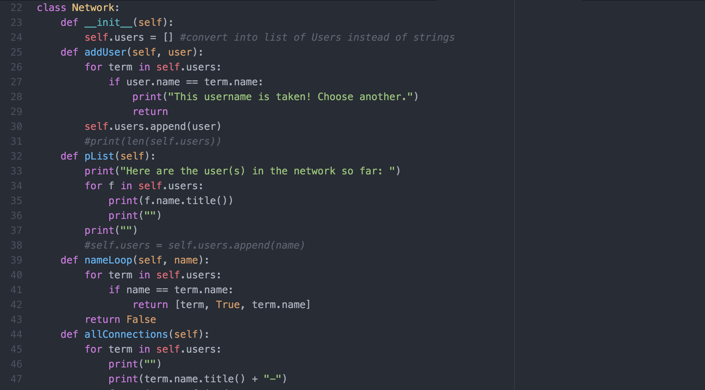

Hi there! Welcome to my website. Here are a few quick facts about me. I'm currently a rising senior at the International School of Beijing, where I've been for the past 12 years. My favorite subject is Physics (especially Cosmology), and I hope to go on to study this in college. My other academic interests are mainly Math and Chemistry. Additionally, I'm attended the Girls Who Code Summer Immersion program at Pivotal in Palo Alto. This page was created as part of this program. The projects you see below were all completed during this experience. In terms of leisure life, my interests are all over the place. I love books, Soulcycle, space (again), speech, musicals, and, more recently, rock climbing.


 
